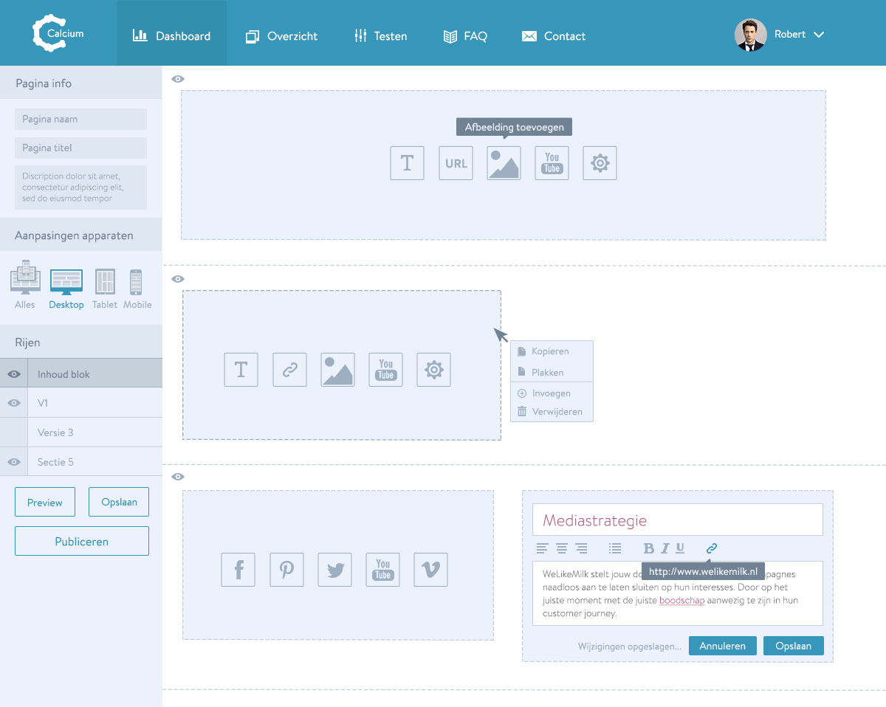
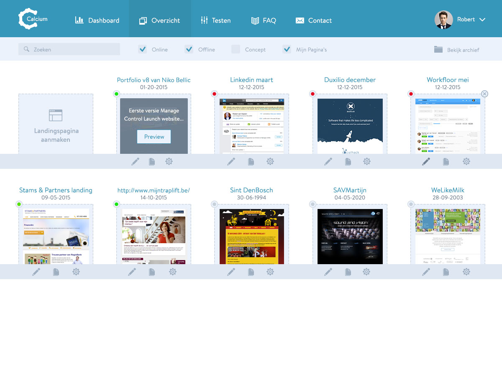
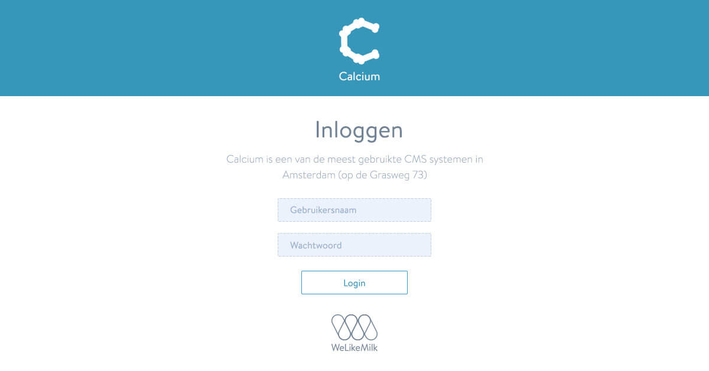

We aimed to address accurate communication of the company name, brand repositioning, and the merger of two unique brand experiences.Marc Billings, CEO @ Blackdove


WeLikeMilk is an Amsterdam based agency specialized in marketing. They help big clients like Achmea, Simyo, KPN en Thuiscomfort to optimize their conversion rates.
Last year WeLikeMilk came to me with the idea to create a custom CMS completely focused on optimizing a website's conversion rates for use with their clients. Together with their team I created just that: A CMS with a great UX that helps their clients gain more insight in how to optimize conversion rates.
UX & Interaction Design / May 2015 - July 2015